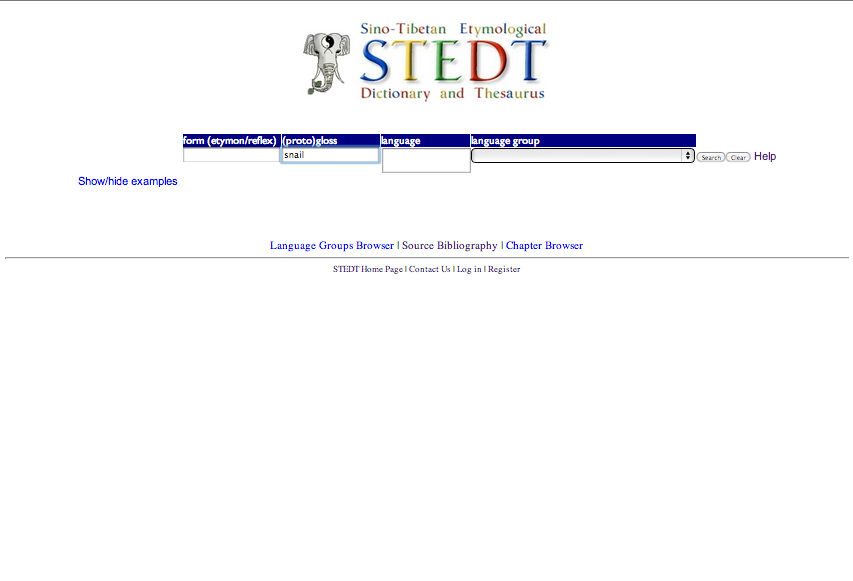
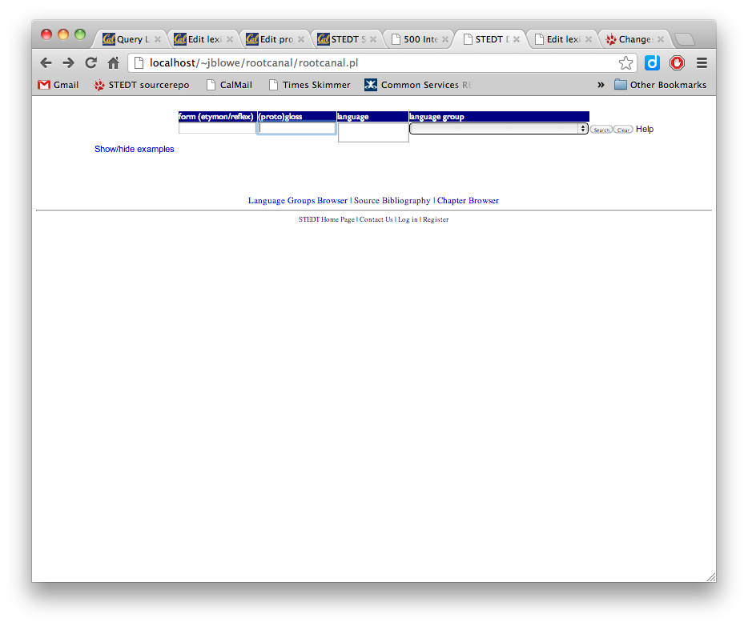
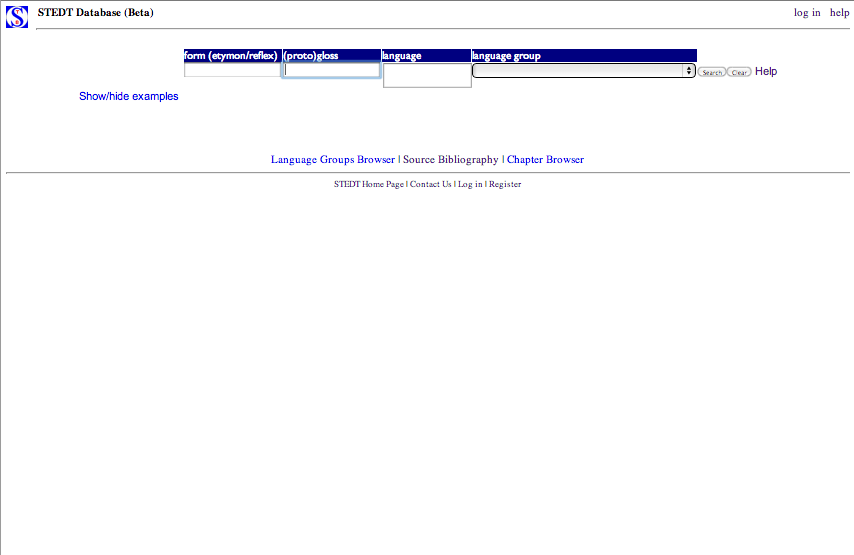
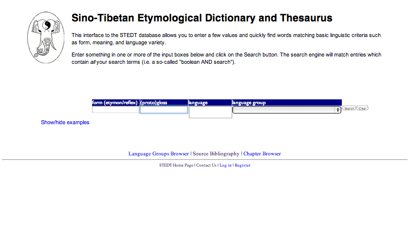
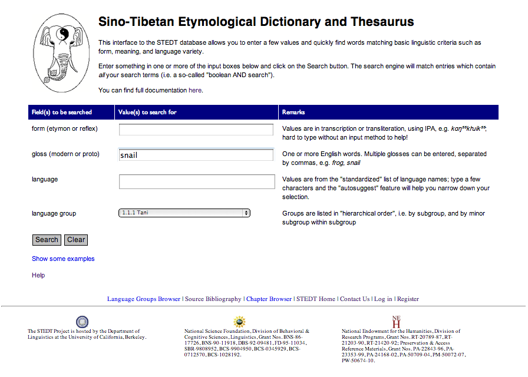
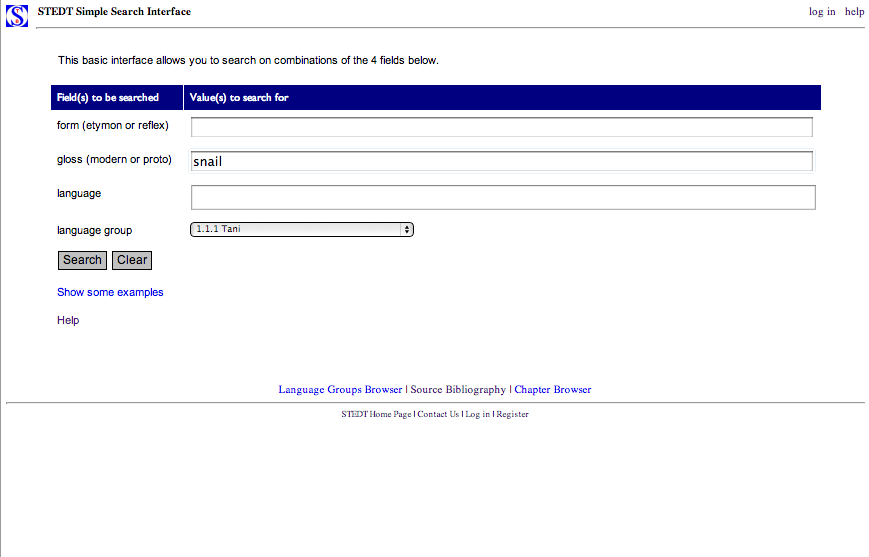

#1 Current Splash Page
#2 Current Splash Page, no header logo
#3 Current Splash Page, with "standard header"
#4 Current Splash Page, with "Rev 2 Custom Header"
#5 "Rev 2", with custom header, etc.
#6 "Rev 2", with "standard header", and own subheader

#7 "Rev 2", terser
#8 "Rev 2", with own subheader